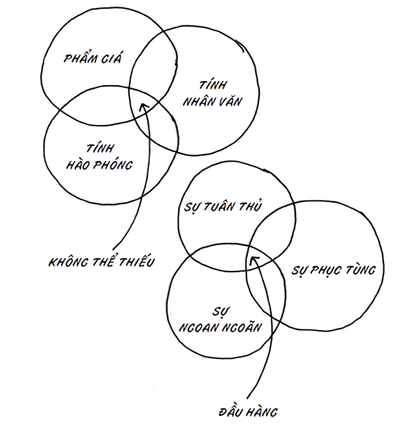

Bạn nên làm gì khi nghệ thuật của bạn không phát huy tác dụng?
Chuyện gì sẽ xảy khi khi cuộc đối thoại không xảy đến, sản phẩm không bán được, người tiêu dùng không hài lòng, sếp không vui và mọi người không cảm động.
Hãy sáng tạo thêm nghệ thuật.
Chẳng phải đó là lựa chọn duy nhất sao?
Hãy trao tặng thêm những món quà.
Hãy học hỏi từ những gì bạn đã làm và nỗ lực hơn nữa.
Lựa chọn duy nhất còn lại là từ bỏ và trở thành một bánh răng lỗi thời – đồng nghĩa với thất bại. Cố gắng rồi thất bại vẫn tốt hơn là chỉ thất bại đơn thuần, vì sự cố gắng sẽ biến bạn thành nghệ sĩ, đồng thời cho bạn quyền nỗ lực thêm lần nữa.
“Sếp tôi sẽ không cho phép”
Sự phản đối duy nhất và lớn nhất trước việc bạn thay đổi cách tiếp cận công việc của mình chỉ là một sự thật chắc chắn: Sếp bạn sẽ không cho phép bạn trở thành thứ gì khác ngoài một chiếc bánh răng.
Nhưng trong 9/10 trường hợp, điều đó không hề đúng. Và trong 1/10 trường hợp còn lại, bạn nên tìm công việc mới.
Hãy xét trường hợp hiếm hoi này trước.
Nếu bạn thực sự đang làm việc cho một tổ chức khăng khăng muốn bạn trở nên tầm thường và áp đặt sự tuân thủ cho mọi nhân viên của họ, thì tại sao bạn cứ ở đấy? Bạn đang xây dựng điều gì? Công việc không có khả năng trở nên thú vị hay thử thách, kỹ năng của bạn sẽ không tăng thêm, và giá trị của bạn trên thị trường sẽ giảm theo từng ngày bạn lưu lại nơi đó. Và nếu lịch sử là một bản chỉ dẫn, thì công việc của bạn không hề ổn định như bạn nghĩ, vì những công ty trung bình tạo ra sản phẩm trung bình cho những con người trung bình đang phải chịu áp lực khủng khiếp.
Tất nhiên, điều đó có thể thoải mái và, phải, bạn đã bị tẩy não để tin rằng đây là những gì bạn được cho là phải làm; nhưng không, bạn không đáng bị thế.
Song, trường hợp còn lại là trường hợp thường gặp. Bạn nghĩ rằng sếp bạn không cho phép bạn làm thế, và cùng lúc đó, sếp bạn cũng không hiểu nổi vì sao bạn không đóng góp thêm tri thức và lòng nhiệt tình của mình. Trong hầu hết các công việc phi-bánh-răng, nỗi khổ tâm lớn nhất của một vị sếp là nhân viên của bà ấy sẽ không dấn bước và dốc hết sức cho công việc.
Một điều hoàn toàn đúng là sếp bạn sẽ không chịu thất bại thay bạn, không đứng ra bảo vệ bạn khi bạn cứ gây rối mà không báo trước, và không đảm bảo thành công cho bạn bất chấp hành vi của bạn là gì. Nếu đó là định nghĩa của bạn về “sếp tôi sẽ không cho phép”, thì chúng ta đang gặp vấn đề về ngữ nghĩa, chứ không phải về quản lý.
Nền tảng cho công việc của bạn là thuyết phục sếp tin vào những kế hoạch của mình, hành xử theo cách che chắn cho bà ấy trước sếp của bà ấy, và tỏ ra khó đoán theo cách dễ đoán. Bạn không thể nhảy từ một chuyên viên phụ trách khách hàng sang nhiệm vụ bay đến gặp khách hàng lớn nhất tại Cannes trên phi cơ riêng, rồi tự chi trả cho chuyến bay đó chỉ trong một tháng được. Bạn không thể bắt đầu với lòng tin có sẵn từ phía công ty; bạn phải giành được nó.
Cuộc chiến giành Giải Pulitzer: Bạn có thể chưa đủ giỏi
Bạn có tài, nhưng có thể bạn không có tài trong công việc mình đang làm.
Bạn có thể có một ý tưởng, niềm đam mê, tri thức và lòng nhiệt thành ấn tượng. Nhưng thị trường có thể ghét điều đó. Công nghệ có thể không phát huy tác dụng, tài nghệ của bạn có thể còn thiếu sót. Nếu vở kịch của bạn nhàm chán, tranh vẽ của bạn tầm thường hoặc kỹ năng giao thiệp của bạn tẻ nhạt, thì có lẽ bạn đang làm sai việc.
Không có gì đảm bảo rằng những ai dự định đoạt Giải Pulitzer đều sẽ đoạt được nó. Không có gì đảm bảo rằng chỉ vì bạn đam mê thiết kế web mà trang web của bạn sẽ thực sự thịnh hành.
Chân lý sống động là đây: Giờ đây, khi đã có quyền tự do sáng tạo, chúng ta phải tiếp nhận sự thật rằng không phải mọi tạo vật đều bình đẳng, và một số người sẽ không chiến thắng.
Như thế không có nghĩa bạn là kẻ thua cuộc, nhưng có thể là bạn đang sáng tạo sai nghệ thuật, hoặc vẽ sai bản đồ. Nếu bạn không giành chiến thắng trong vai trò một chuyên viên môi giới chứng khoán, có lẽ nghệ thuật của bạn nằm ở lĩnh vực khác.
Thách thức nằm ở việc bạn phải biết rõ thị trường, biết rõ bản thân đủ để nhìn ra sự thật.
Có thể bạn không được trả công để làm nghệ thuật của mình
Vấn đề là việc tô vẽ bề ngoài cho ý tưởng của bạn đang dễ dàng hơn bao giờ hết. Và càng dễ hơn nữa nếu bạn muốn ai đó chú ý đến kỹ năng giao thiệp, tài viết lách hay tầm nhìn của mình. Điều này đồng nghĩa những ai từng che giấu tài năng của họ giờ đã nhận ra mình được chú ý.
Trang blog mà bạn vừa lập ra và thu về nhiều lưu lượng đấy – có lẽ nó không thể hái ra tiền.
Tổ chức phi lợi nhuận mà bạn hợp tác, nơi bạn có thể thay đổi nhiều cuộc đời đấy – có lẽ việc biến nó thành sự nghiệp sẽ hủy hoại nó.
Niềm đam mê mà bạn dành cho tranh trừu tượng đấy – có lẽ việc thương mại hóa tác phẩm của bạn đủ để bán được sẽ vắt kiệt niềm vui trong nó.
Khi làm điều mình yêu thích, bạn sẽ có thể đầu tư thêm nhiều nỗ lực, tâm sức và thời gian cho nó. Nghĩa là bạn sẽ có thêm khả năng giành chiến thắng, tăng phần lợi và tạo thu nhập từ nó. Trái lại, các thi sĩ không được trả công. Thậm chí tệ hơn, các thi sĩ cố tìm cách lấy công sau cùng chỉ viết ra những vần điệu thất bại và cùng lúc căm ghét chúng.
Hiện nay, có nhiều cách để bạn chia sẻ tài năng và sở thích của mình đến công chúng hơn bao giờ hết. Và nếu có động lực, tài năng cùng sự tập trung, bạn có thể sẽ khám phá ra một thị trường yêu thích điều bạn làm. Những người đó sẽ đọc blog, xem tranh hoạt họa hoặc nghe nhạc MP3 của bạn. Nhưng than ôi, điều đó vẫn không có nghĩa rằng bạn có thể kiếm ra tiền từ nó, từ bỏ công việc hằng ngày và dành cả tháng ngày để sáng tác nhạc.
Những cạm bẫy chực chờ bạn chính là:
---❊ ❖ ❊---
Để hái ra tiền từ công trình của mình, có thể bạn sẽ bôi xấu nó, lấy đi phép màu để kiếm từng đồng đô-la;
Sự chú ý không phải lúc nào cũng tương đương với dòng tiền đáng kể.
---❊ ❖ ❊---
Tôi nghĩ điều ý nghĩa là hãy biến nghệ thuật thành nghệ thuật của bạn, hiến dâng bản thân mình cho nó mà không bận tâm đến thương mại.
Làm việc bạn yêu thích là điều quan trọng hơn cả, nhưng nếu bạn sắp kiếm sống nhờ đó, sẽ có ích nếu tìm được một “ngách” nơi dòng tiền chảy về như hệ quả đều đặn từ ý tưởng thành công của bạn. Yêu điều bạn làm cũng quan trọng gần bằng làm điều bạn yêu, đặc biệt nếu bạn cần kế sinh nhai từ đó. Hãy tìm một công việc mà bạn có thể tận tâm với nó, một sự nghiệp hoặc ngành kinh doanh mà bạn sẽ đắm chìm trong tình yêu với nó.
Một người bạn yêu âm nhạc của tôi muốn dành cả đời mình cho âm nhạc, và anh vừa tìm được công việc PR cho một hãng thu âm. Anh ghét làm công việc PR, và cuối cùng nhận ra rằng chỉ tham gia trong ngành thu âm không có nghĩa rằng anh có việc gì để làm với âm nhạc. Thay vì tìm một công việc mình yêu thích, sau cùng anh lại chọn cách gần gũi với điều mà anh quan tâm nhưng chẳng làm gì liên quan đến nó. Thay vì thế, tôi ước rằng anh đã trở thành một giáo viên tâm huyết, và dành từng giây phút rảnh rỗi để sáng tác và chia sẻ nhạc miễn phí trên mạng. Ấy thế mà anh lại trở thành chú “chó săn” cáu kỉnh của công chúng, làm việc gấp đôi thời gian vì khoản lương ít ỏi hơn, mà chẳng sáng tạo ra thứ âm nhạc nào cả.
Có thể bạn không thể làm ra tiền với điều bạn yêu thích (chí ít là với những gì bạn đang yêu thích). Nhưng tôi cược rằng bạn có thể tìm ra cách yêu thích điều bạn làm để kiếm ra tiền (nếu bạn lựa chọn sáng suốt).
Hãy làm nghệ thuật của bạn. Nhưng đừng đập nát nghệ thuật của bạn chỉ vì nó không tự hiến mình để chi trả hóa đơn. Đó sẽ là nỗi bi kịch.
(Và nút thắt ở đây – phải, luôn có nút thắt – là ngay khi tập trung vào nghệ thuật của mình và để chuyện tiền bạc lại phía sau, có lẽ bạn sẽ phát hiện ra sự tập trung này chính là bí quyết giúp bạn thực sự đột phá và kiếm ra tiền.)
Gọi cho Ellsworth Kelly
Dưới đây là mơ ước của một nghệ sĩ:
Học viện Nghệ thuật Chicago mời kiến trúc sư lừng danh thế giới Renzo Piano về để xây phần mở rộng cho tòa nhà của họ. Họ cùng nhau gọi cho bạn trong một cuộc họp qua điện thoại. “Này Ellsworth, chúng tôi muốn ông vẽ một bức tranh tường khổng lồ cho bảo tàng mới của chúng tôi. Ông có thể làm gì tùy thích; cứ gọi cho chúng tôi khi hoàn thành; trong hôm nay, chúng tôi sẽ gửi séc luôn.”
Các nghệ sĩ muốn sếp họ hành động như trên. Và có lẽ khi bạn nổi tiếng và sống đến 86 tuổi như Ellsworth, chuyện đó sẽ xảy ra. Nhưng từ giờ đến lúc ấy, hãy hiểu rằng sếp bạn ít có khả năng lĩnh hội được điều này.
Hệ thống mà chúng ta làm việc trong nó đang thay đổi, nhưng đó là thay đổi mang tính tiến hóa, chứ không mang tính cách mạng. Các tổ chức hiếm khi trao cho nòng cốt mọi sự hỗ trợ và động viên mà họ xứng đáng. Điều này cũng đồng nghĩa nỗ lực của bạn không phải lúc nào cũng đạt được những gì cần thiết để thành công.
Có hai chiến thuật sẽ giúp ích cho bạn nếu bạn không phải là Ellsworth Kelly:
---❊ ❖ ❊---
Hãy hiểu rằng có sự khác biệt giữa câu trả lời đúng và câu trả lời bạn có thể dùng để thuyết phục. Thông thường, những ý tưởng dị biệt trong các tổ chức đều bị bác bỏ. Người ta không phủ nhận chúng vì chúng sai; mà vì người đang ra sức thuyết phục không có vị thế hay thành tích quá khứ để làm điều đó. Sếp bạn cũng có một thế giới quan. Khi bạn đề xuất điều gì đó kích thích sự phản kháng của ông ấy, hãy đoán xem điều gì sẽ xảy ra?
Hãy tập trung thực hiện những thay đổi hướng đến hạ tầng, chứ không phải thượng tầng. Tiếp xúc với khách hàng và đồng nghiệp thường sẽ dễ hơn tác động đến các sếp và nhà đầu tư. Về lâu dài, khi bạn tạo dựng một môi trường nơi tri thức và tính hào phóng được đền đáp, cấp trên của bạn sẽ chú ý, và bạn sẽ được trao thêm nhiều tự do và quyền hạn.
---❊ ❖ ❊---
Đừng yêu cầu sếp bạn phải tiến hành can thiệp, che chở bạn hay nhận trách nhiệm. Thay vì thế, hạy tạo ra những khoảnh khắc để sếp bạn vui vẻ nhận công trạng. Một khi vòng tuần hoàn này bắt đầu, bạn có thể chắc chắn nó sẽ tiếp tục quay.
Vòng tuần hoàn trao tặng nghệ thuật bất tận
Khi trò chuyện với những người quyết tâm với nghệ thuật của họ, bạn sẽ khám phá được điều sau đây: Họ không bao giờ ngừng trao tặng.
Họ không trao tặng để một chốc sau hy vọng sẽ nhận lại, hay trở thành “kẻ nhận” một khi vượt qua ngưỡng “cho”. Thay vì thế, họ luôn trong tâm thế cho đi. Đó là việc họ làm, vì họ là những nghệ sĩ chứ không phải bánh răng. Họ là những nòng cốt chứ không phải nhân viên dễ bị thay thế.
Việc bạn đang làm có thể không phải là công việc, và có lẽ bạn không thể làm những việc mình đang làm và được trả công nhờ nó. Nhưng tôi chắc chắn nếu bạn trao tặng đủ – cho đúng người và theo đúng cách – người nhận sẽ trân quý những món quà của bạn và hành trình của bạn sẽ được tưởng thưởng. Ngay cả khi đó không phải lý do bạn làm thế.
